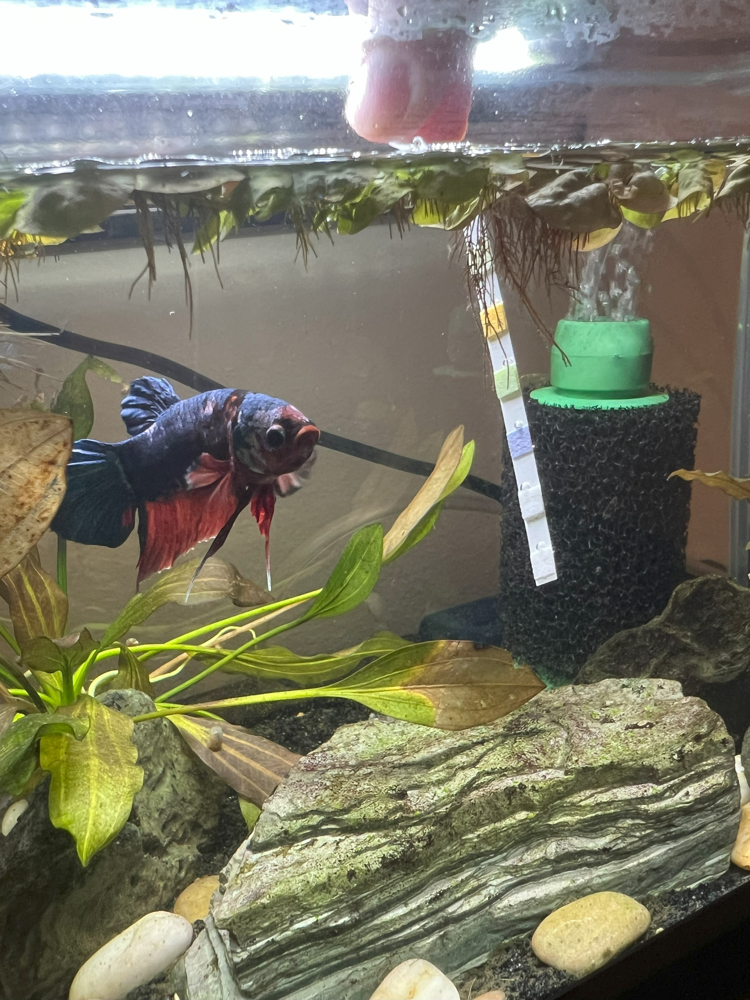

Written by Alex Bouwens |
Testing water quality is an essential part of Fishkeeping. By using a test strip (or any form of water testing kit), it gives information on the overall water quality. If the quality is poor (high Ammonia, Nitrite, Nitrate, unbalanced pH), this puts the fish in the tank at serious risk of illness and death.
Below I have outlined the 5 Step Process on how to test your water quality.
In order to test your waters, you must have a test kit. The one I will be using is from Aquarium Co-Op, but you can find test kits at any pet store.
Make sure the tester kits can test for Nitrate, Nitrite, pH, Buffer (KH), Hardness (GH), and Chlorine)
Image source: ©Alex Bouwens (Author)
To know whether your test has good or badresults, you must become familiar with what the measurement criteria mean:
Nitrate:Nitrate is a nitrogen compound from fish waste. It matters because high levels can harm fish over time.
Nitrite:Nitrite is a toxic intermediate nitrogen compound. It is harmful because it impairs fish’s ability to carry oxygen in their blood.
Hardness (GH):General Hardness measures calcium and magnesium. It is important for fish health and shell formation.
Buffer (KH):Carbonate Hardness stabilizes pH levels. It prevents dangerous pH swings in the tank.
pH:pH measures water acidity or alkalinity. Different fish need specific pH ranges to thrive.
Chlorine:Chlorine is a disinfectant in tap water. It must be removed because it harms fish gills and beneficial bacteria.
Image source: ©Alex Bouwens (Author)
Now once you have your strip, you must test the water.
To do this with the strip shown, put the portion of the strip with the squares into the water for 3 Seconds, then remove.
Now, wait 60 seconds for results.
NOTE:if you are using a different method to measuere the water, follow the directions according to the packaging
Image source: ©Alex Bouwens (Author)
Now that you have your results, compare them with the colors on the back of the container.
The color on the strip corresponds with a colored measurement on the package.
Image source: ©Alex Bouwens (Author)
In this final step, you want to reflect on the results and decide if a water change is necessary. My packaging shows there are times where I must change water (for example) if any Nitrates appear in the tank.
However, if everything looks good, then no more work is necessary!